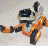

|
||||||
|
ERS-110, 111 |
 ERS-210[A], 220[A] |
Programming AIBO with: YART, RCodePlus OpenR SDK |
ERS-311[B], 312[B], 31L |
ERS7 |
||
|
Home
Movies (all) |
PDAs: CLIE
( Panel
Zipit )
Lesser Robots: Pleo ( RoboSapien ICybie ) Game Hacks: Nintendo Wii Nintendo DS ( PSP ) |
Email: aibopet@aibohack.com | ||||